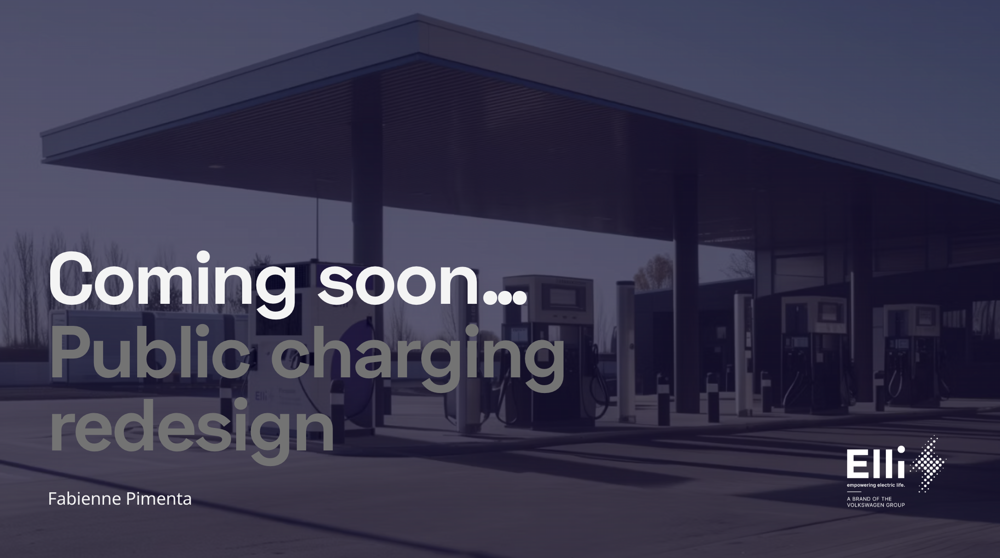

Public charging redesign
Usecase design @Elli
I partner with product, engineering, and leadership to turn ambiguity into sharp product direction, resilient UX systems, and measurable outcomes.
12+ years designing digital products across mobility, SaaS, and early-stage ventures.
Usecases available upon request.
Public charging redesign
Usecase design @Elli
Feedback feature impact
Usecase design @Elli
Keyless scooter access
Usecase design @unu
unu beta communities
Usecase design @unu
"Fabi is deeply user-centered, always prioritizing the needs and pain points of our users. She designed solutions that were not only functional but also tested rigorously for usability. Her work is thorough, collaborative, and highly adaptable to shifting team and company needs. She is dedicated, methodical, and consistently makes the work of those around her easier. I would hire Fabienne again without hesitation."
"She is an exceptionally talented designer, particularly in digital concept and IoT system design. Fabi's ability to take complex problems, structure and distill them into clear, innovative solutions is remarkable. She always sees the bigger picture while bringing together teams and stakeholders, ensuring cohesive and forward-thinking designs. Her collaborative spirit and drive for excellence made her a key asset to the team, and I hope that our professional paths will cross again!"
"A great collaborator, team player, and listener, always making sure the team understands the "why" behind our decisions, and consistently keeping our customers and users at the forefront. Her thoughtful approach and dedication made her a great partner to work with, I'm looking forward to the day we can work together again!"
"Strong skills in both UX and UI design, as well as user research. Fabi had a very collaborative approach to the design process, gathering input and data from within and outside the organization and then collaborating with PMs, engineers, and other design teams to create solutions that best suited the problem at hand. She was an excellent communicator, very open to receiving as well as giving feedback, making sure that the team worked smoothly and that the best ideas could surface."
Let's discuss product strategy, discovery, or complex UX systems. hello@fabi.pt